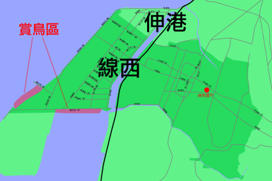

大肚溪口溼地自從設立水鳥保護區後已成為各種水鳥、候鳥棲息、繁衍的天堂。也由於水鳥每年在春、秋兩季過境、棲息，而且到此棲息的水鳥如鷸科、鷺鷥科水鳥都是珍貴的鳥類。
再加上線西海濱肉粽角潮間帶，區內多砂、蚵貝類、朝潮蟹、沙蟹數量甚多，吸引以這些蟹貝類為主食的鳥類前來過冬棲息，亦使得線西海濱成就另一特殊景觀。吸引越來越多的賞鳥人士前來線西海濱，欣賞水鳥群舞的英姿。
彰化縣野鳥協會在常在西濱沿岸舉辦賞鳥活動，有興趣的朋友，連結彰化野鳥協會網站，或打電話去尋問相關資訊。
「彰化縣野鳥協會的電話是04-7283006」 |
 |

◎「大肚溪口鳥類資源」，中國野鳥學會。民81年。
◎「2000春候鳥季：觀鳥、觀心、觀自然」，中華民國野鳥協會、民89年。
◎
http://www.hmjh.chc.edu.tw/www/class/bird1/bird5.htm，和美國中小班教學資源，有介紹燕鷗等鳥類
◎http://www.gogoph.com.tw/bird/common/57.htm ，小燕鷗
◎http://www.gogoph.com.tw/bird/common/22.htm，鳥類
◎http://www.bird.org.tw/changhua/，彰化縣野鳥協會，提供協會及各項賞鳥資訊 |


 賞鳥的過程中，第一階段稱之為「看鳥不識鳥」，這時需要一本能夠精確描述鳥類型態、棲地環境、分布範圍、生活習性、生活特徵等的圖鑑。依照製作方式的不同，可區分為二類：
賞鳥的過程中，第一階段稱之為「看鳥不識鳥」，這時需要一本能夠精確描述鳥類型態、棲地環境、分布範圍、生活習性、生活特徵等的圖鑑。依照製作方式的不同，可區分為二類：